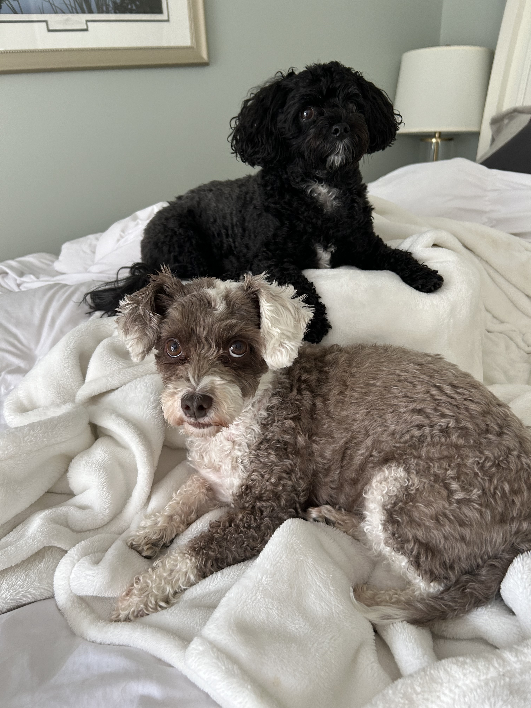
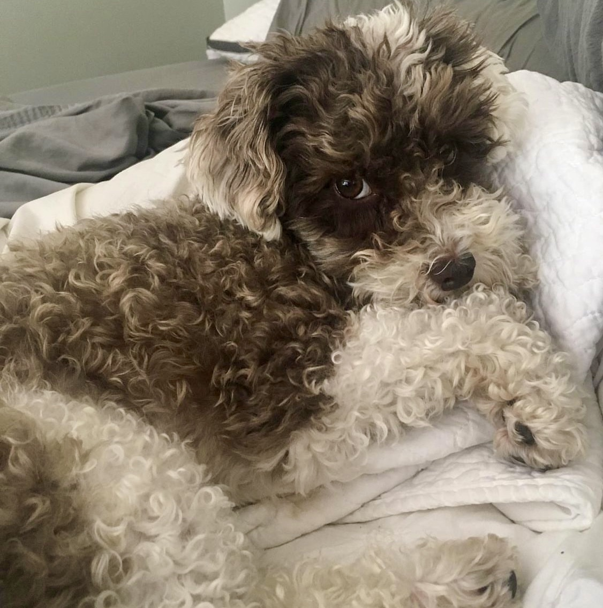
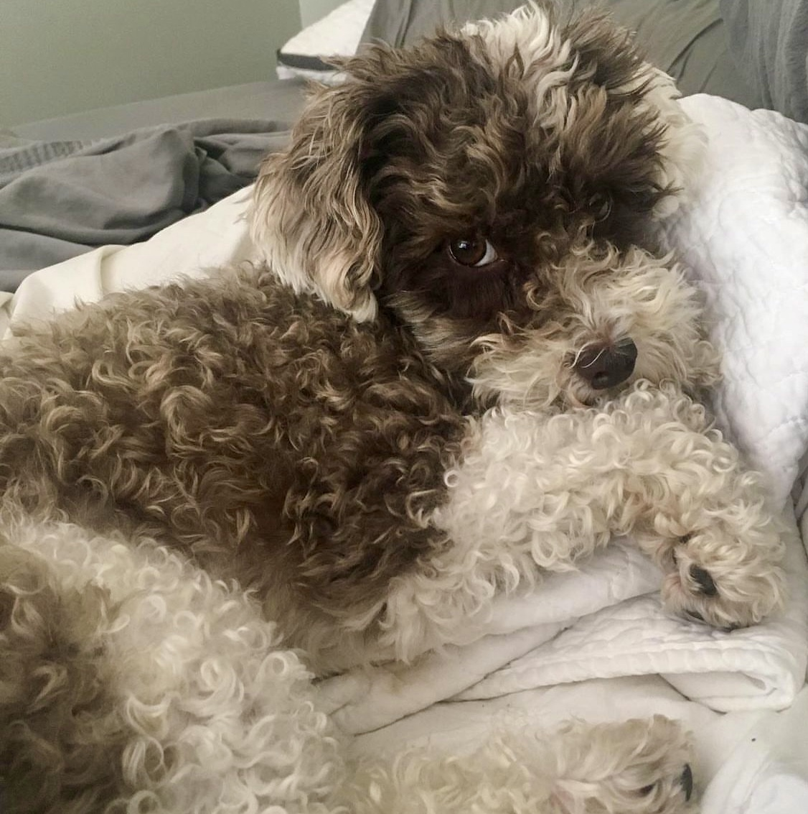
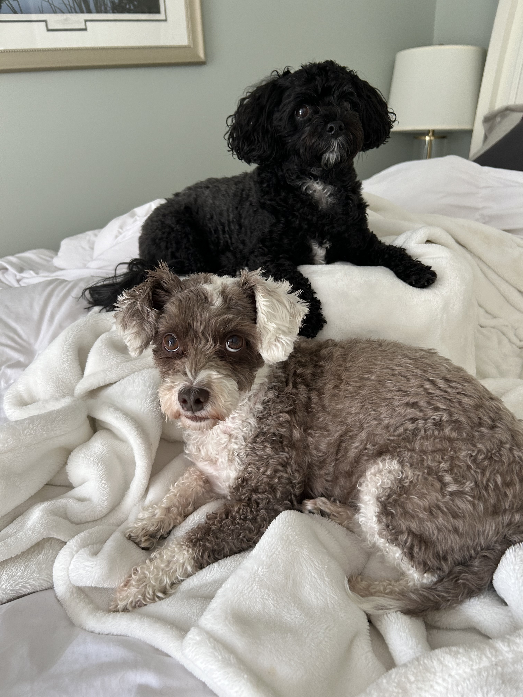
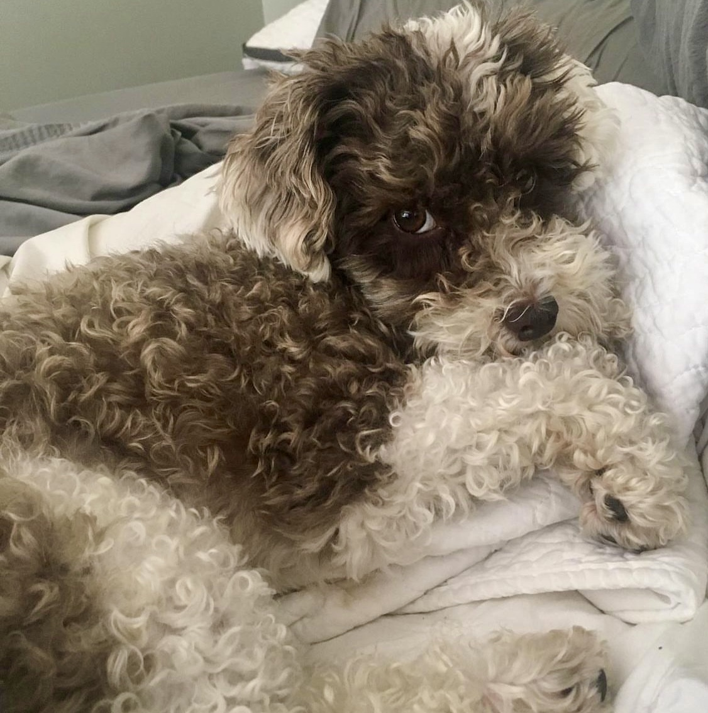

My Pets
I have two dogs named Winston and Piper!
 

Recent computer science graduate from Quinnipiac University with a double minor in accounting and business analytics.
I found computer science through one of my freshman year roommates Emily Balboni! Emily was always showing me her cool projects she was working on so one day I thought I'd give coding a try and I've been doing it ever since.
I have worked as a data and analytics intern at W.L. Gore and Associates in the summer of 2023. There I worked primarily with denodo and PowerBI to create views and dashboards for other associates, aiming to improve efficiency in the workplace.
I also worked as a facilitator at CT STEM Academy where I help run afterschool STEM programs and field trips for schools in the surrounding area. I teach activities and topics relating to chemistry, robotics, NASA and space, and more.
I am passionate about sports, especially rugby, which I play for my university. I also love watching movies, doing anything outdoors, and spending quality time with my friends and family. Another one of my passions is LEGO; I am an extreme LEGO lover and enjoy building intricate creations. Additionally, I am actively involved in community service, and giving back to the community is something I am deeply committed to.
I have two dogs named Winston and Piper!

